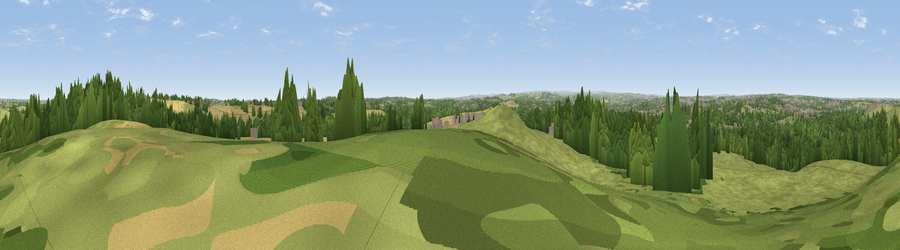

Viewpoint near Kirkthorpe
#20391 in England · top 26% of its area beats it · near KirkthorpeWhere it is
The exact computed spot (SE 36275 20475). Click the marker for map links.
The view, rendered

A 360° render of this exact spot computed from the terrain model, tree cover and land cover — summer colours, afternoon light, calibrated against photographs of famous viewpoints. Real trees, hedges and buildings will differ in detail.
The panorama
Grey silhouette: terrain skyline in each direction (720 bearings, Earth curvature and refraction included). Dashed green: skyline with trees (+15 m) and buildings (+8 m) as obstacles. Blue strip: how far the ground is visible on each bearing.
Where the view opens
Wedge length = distance to the farthest visible ground on that bearing (vegetation-aware). Rings at 10, 25 and 50 km.
What fills the view
46% grassland · 27% woodland · 19% cropland · 7% built-up ·
Angular shares of the visible panorama (visual magnitude), not map area. Landscape diversity 0.55 (0–1 Shannon).
Key numbers
More beautiful places nearby
The staircase of upgrades: each row has a higher view potential than everything closer. Driving times are estimates from straight-line distance, calibrated against real road routing — check an actual route before setting out.
| Place | Direction | Drive | Score |
|---|---|---|---|
| Viewpoint near Warmfield | ENE · 1 km | ~3 min | 58.3 |
| Viewpoint near Hollingthorpe | SW · 8 km | ~16 min | 60.9 |
| Prince of Wales Colliery Tip | ENE · 9 km | ~18 min | 61.4 |
| Viewpoint near Woolley | SSW · 9 km | ~18 min | 66.2 |
| Viewpoint near Grange Moor | WSW · 14 km | ~26 min | 69.8 |
| Viewpoint near Hoylandswaine | SW · 19 km | ~32 min | 71.8 |
| Viewpoint near Hoylandswaine | SSW · 19 km | ~32 min | 72.7 |
| Viewpoint near Jackson Bridge | SW · 23 km | ~37 min | 73.5 |
53.67949, -1.45230 · source: screening · position refined by local search. Computed location — check access rights before visiting.